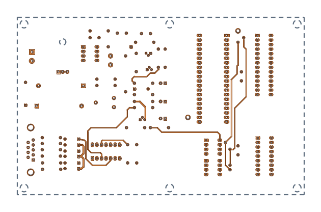
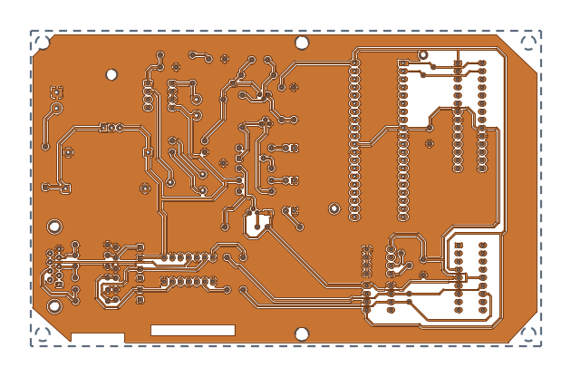
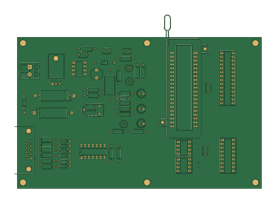
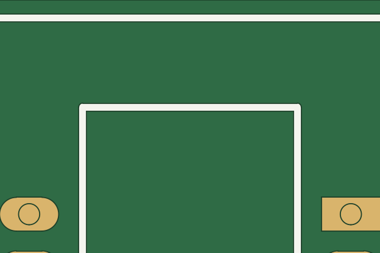
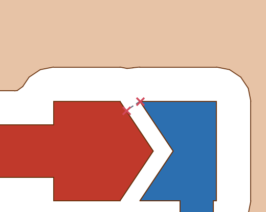
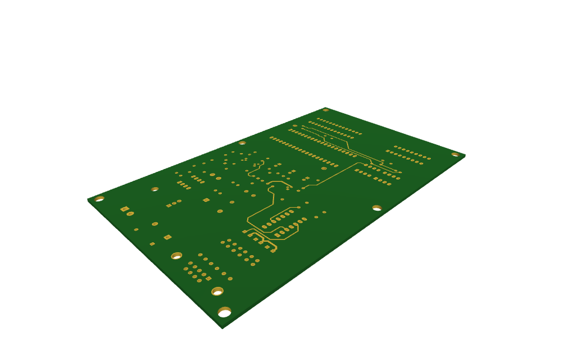

KiCad
The layers of a board are planex2d faces, which can be written as a KiCad board and read back.
[1]:
import itertools
import math
import planex as px
A minimal example
The example is a round board: a disc of radius 20 mm as the board outline and a copper layer of radius 15 mm with a hole of radius 2 mm at (5, 0). It needs only planex2d and writes disc.kicad_pcb into the working directory:
[3]:
outline = px.QuickSketch().Circle(20).Face()
copper = px.QuickSketch().Circle(15).Circle(5, 0, 2).Face()
px.WriteKiCad("disc.kicad_pcb", {"F.Cu": copper, "Edge.Cuts": outline}, unit=px.mm)
board = px.FromKiCad("disc.kicad_pcb")
print(list(board), "copper", 1e6 * board["F.Cu"].mass, "mm², exact", math.pi * (15**2 - 2**2))
['F.Cu', 'B.Cu', 'Edge.Cuts'] copper 694.2919764433442 mm², exact 694.2919764433443
The copper layer comes back as the same face, in meters.
A real board
px.FromKiCad reads a KiCad board (.kicad_pcb, KiCad 9 and later) as a dict of shapes, one per layer. The copper layers come first, from the top, with their faces named by net and their drill holes cut out. The board outline Edge.Cuts follows as a face named "profile", and then every other layer that holds something, such as silkscreen, solder mask, paste and courtyards, as KiCad prints it. Given a stackup, it builds the whole board in 3D instead. px.WriteKiCad writes shapes
back as a board. Everything is in meters with y pointing up, as in the rest of planex2d, while KiCad works in millimeters with y pointing down.
The board here is the pic_programmer demo from KiCad’s own demo projects, demos/pic_programmer in the KiCad repository, licensed CC BY-SA 4.0 by the KiCad project. The board file and the pictures on this page made from it are under the same license. Download: pic_programmer.kicad_pcb.
[4]:
board = px.FromKiCad("pic_programmer.kicad_pcb")
for name, layer in board.items():
print(f"{name:10} {len(layer.faces):4} faces, {1e6 * layer.mass:9.2f} mm²")
/workspace/planex/documentation/fenicsx/lib/python3.12/site-packages/planex/_ids.py:70: PlanexWarning: FromKiCad: 223 texts left out (not supported yet)
r = f(*args, **kwargs)
F.Cu 232 faces, 762.68 mm²
B.Cu 126 faces, 11819.33 mm²
Edge.Cuts 1 faces, 15589.59 mm²
F.SilkS 72 faces, 371.79 mm²
B.SilkS 1 faces, 1.15 mm²
F.Mask 245 faces, 836.04 mm²
B.Mask 246 faces, 839.72 mm²
Cmts.User 6 faces, 24.32 mm²
F.CrtYd 62 faces, 147.59 mm²
B.CrtYd 1 faces, 0.58 mm²
F.Fab 60 faces, 200.20 mm²
Text is not read yet, and FromKiCad reports how much it left out. The edges of holes through copper are named "pth" (plated, for vias and plated pads) or "npth" (unplated), and every hole through the whole board is also cut out of the outline.
[5]:
fcu, bcu, outline = board["F.Cu"], board["B.Cu"], board["Edge.Cuts"]
(x0, y0), (x1, y1) = outline.bounding_box
print("board", round(1e3 * (x1 - x0), 1), "x", round(1e3 * (y1 - y0), 1), "mm,", len(outline.faces[0].inner),
"holes through it")
for name, layer in (("F.Cu", fcu), ("B.Cu", bcu)):
nets = {f.name for f in layer.faces if f.name}
print(name, len(nets), "nets,", len(layer.edges(name="pth")), "edges of plated holes")
board 160.0 x 99.1 mm, 251 holes through it
F.Cu 111 nets, 244 edges of plated holes
B.Cu 111 nets, 244 edges of plated holes
Both copper layers
The two copper layers are drawn in copper: the top layer (Figure 1a) and the bottom layer (Figure 1b), which is mostly one ground pour. The board outline is dashed.

(a) F.Cu, the top layer

(b) B.Cu, the bottom layer
What the board looks like
The other layers hold what KiCad prints there. The solder mask layer F.Mask holds the openings in the mask, with every pad grown by its mask margin and joined where pads come closer than the board’s minimum mask width. The silkscreen F.SilkS holds the lines and outlines as wide as they are drawn. Laid over each other, they show the board as it comes from the manufacturer, with the copper seen through the openings (Figure 2a), and the top of the PIC’s socket (Figure 2b).

(a) F.Mask and F.SilkS over the outline

(b) The top of the PIC's socket
Copper per net
The net is the name of the face, so everything that planex2d measures can be grouped by net.
[8]:
def copper_by_net(layer):
area = {}
for f in layer.faces:
net = f.name or "(no net)"
area[net] = area.get(net, 0.0) + 1e6 * f.mass
return area
for name, layer in (("F.Cu", fcu), ("B.Cu", bcu)):
largest = sorted(copper_by_net(layer).items(), key=lambda kv: -kv[1])[:5]
print(f"{name}: " + ", ".join(f"{net} {area:.1f} mm²" for net, area in largest))
F.Cu: GND 98.3 mm², /DATA-RB7 68.9 mm², /CLOCK-RB6 56.9 mm², VCC 50.2 mm², /pic_sockets/VCC_PIC 44.6 mm²
B.Cu: GND 10673.7 mm², /pic_sockets/VCC_PIC 137.9 mm², /VPP/MCLR 131.8 mm², VCC 120.0 mm², /CLOCK-RB6 76.8 mm²
A clearance check
Measure(net, to=other) returns the distance between the faces of two nets and the two closest points. Only nets whose bounding boxes come within a millimeter of each other are measured. The project’s default net class requires 0.25 mm between copper of different nets.
[9]:
def boxes(layer):
out = {}
for f in layer.faces:
if f.name:
(a, b), (c, d) = f.bounding_box
u0, v0, u1, v1 = out.get(f.name, (a, b, c, d))
out[f.name] = (min(u0, a), min(v0, b), max(u1, c), max(v1, d))
return out
def gaps(layer, near=1e-3):
box = boxes(layer)
def close(p, q):
return (p[0] - near < q[2] and q[0] - near < p[2]
and p[1] - near < q[3] and q[1] - near < p[3])
pairs = itertools.combinations(sorted(box), 2)
return {(a, b): layer.Measure(a, to=b)
for a, b in pairs if close(box[a], box[b])}
rule = 0.25e-3
found = {}
for name, layer in (("F.Cu", fcu), ("B.Cu", bcu)):
found[name] = gaps(layer)
(a, b), m = min(found[name].items(), key=lambda kv: kv[1]["distance"])
print(name, len(found[name]), "pairs, closest", a, "and", b, round(1e3 * m["distance"], 4), "mm")
for (a, b), m in found[name].items():
if m["distance"] < rule:
print(" under 0.25 mm:", a, "and", b, round(1e3 * m["distance"], 4), "mm,",
round(1e6 * (rule - m["distance"]), 1), "µm short")
F.Cu 522 pairs, closest /pic_sockets/VCC_PIC and Net-(Q3-B) 0.3614 mm
B.Cu 557 pairs, closest /pic_sockets/VCC_PIC and VCC 0.2496 mm
under 0.25 mm: /pic_sockets/VCC_PIC and VCC 0.2496 mm, 0.4 µm short
The closest spot is on the bottom layer, shown with the two nets colored (Figure 3). It is JP1, a solder jumper made of two triangular pads that are bridged with a blob of solder when the jumper is to be closed, so their gap is narrow on purpose.
[10]:
(a, b), m = min(found["B.Cu"].items(), key=lambda kv: kv[1]["distance"])
p, q = (point[:2] for point in m["points"])
print(a, "and", b, round(1e3 * m["distance"], 4), "mm")
/pic_sockets/VCC_PIC and VCC 0.2496 mm

The board in 3D
With a stackup instead of a layer name, FromKiCad returns the board as one glued OpenCASCADE shape. Every dielectric is the outline extruded between its two copper layers and drilled, the hole walls are faces named "pth" and "npth", and the copper layers are faces at their heights, named by net (the copper itself has no thickness). The stackup is a list of dielectric thicknesses in millimeters from the top, a manufacturer’s table from px.stackups (such as
px.stackups.jlc7628), or px.stackups.kicad, the stackup stored in the board file, here a 1.51 mm core.
[12]:
from ngsolve_webgpu.jupyter import Draw
solid = px.FromKiCad("pic_programmer.kicad_pcb", px.stackups.kicad)
walls = {n: sum(1 for f in solid.faces if f.name == n) for n in ("pth", "npth")}
print("solids", [s.name for s in solid.solids], len(solid.faces), "faces")
print("hole walls:", walls["pth"], "plated,", walls["npth"], "unplated")
Draw(solid, settings={"Objects": {"Edges": False}})
/workspace/planex/documentation/fenicsx/lib/python3.12/site-packages/planex/_ids.py:70: PlanexWarning: FromKiCad: 19 texts left out (not supported yet)
r = f(*args, **kwargs)
solids ['dielectric_1'] 713 faces
hole walls: 244 plated, 7 unplated

Writing a board
px.WriteKiCad takes a dict of layers with the same names and writes a KiCad 9 board. Every face becomes a filled polygon with exact lines and arcs, and the outline becomes lines, arcs and circles on Edge.Cuts. Holes whose edges are named "pth" become vias, round "npth" holes become mounting holes, and faces connected by a plated hole become one net. The copper read back from the copy:
[13]:
px.WriteKiCad("pic_copy.kicad_pcb", {"F.Cu": fcu, "B.Cu": bcu, "Edge.Cuts": outline})
copy = px.FromKiCad("pic_copy.kicad_pcb")
for name in ("F.Cu", "B.Cu", "Edge.Cuts"):
a, b = board[name].mass, copy[name].mass
faces = len(copy[name].faces)
print(f"{name:9} {1e6 * a:.6f} mm² -> {1e6 * b:.6f} mm², {faces} faces")
F.Cu 762.675890 mm² -> 762.675804 mm², 232 faces
B.Cu 11819.329444 mm² -> 11819.329411 mm², 126 faces
Edge.Cuts 15589.587138 mm² -> 15589.587138 mm², 1 faces
Boards from other programs
A board that is not a .kicad_pcb file (Altium, Eagle, PADS, CADSTAR, Fabmaster, P-CAD, SolidWorks PCB) is first converted by KiCad’s own command line tool, kicad-cli pcb import, of KiCad 10 or later, and then read as above. FromKiCad finds the tool through the environment variable PLANEX_KICAD_CLI, on the PATH, or where KiCad installs it on macOS and Windows. Board files older than KiCad 9 raise an error with a hint to open them in KiCad 9 or later and save them.